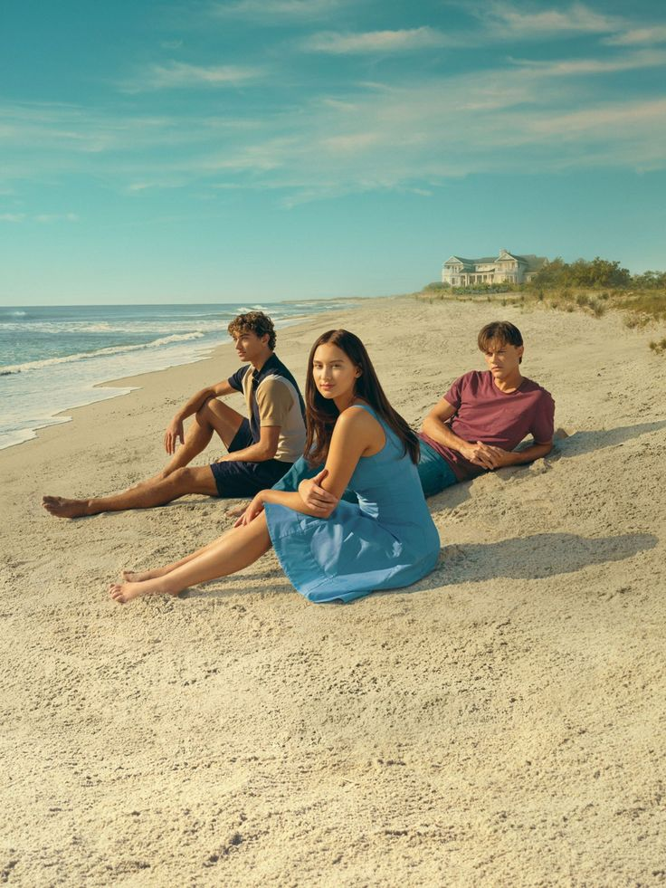
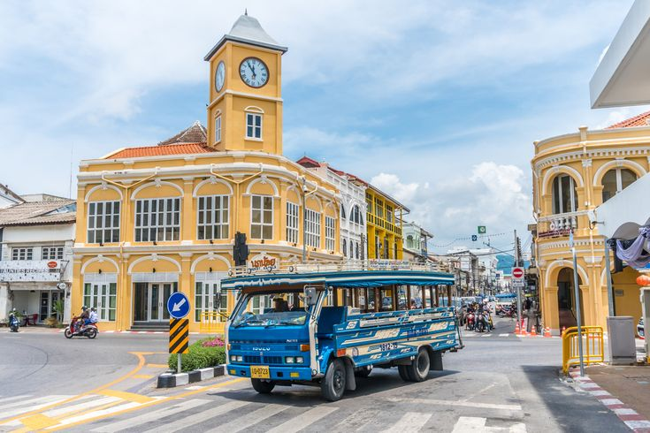

FEATURED SERIES
ซีรีย์แนะนำ
ค้นหาซีรี่ย์ในดวงใจ
พร้อมพาไปค้นพบ สถานที่จริงที่ปรากฏในเรื่องราว และบรรยากาศที่คุณสามารถตามรอยได้
SERIES TRAIL
ค้นพบสถานที่จริงจากฉากในซีรีย์ พร้อมสำรวจสถานที่ท่องเที่ยว คาเฟ่ ร้านอาหาร และที่พัก
DISCOVER THE STORY
เที่ยวตามรอยซีรีย์ เป็นเว็บไซต์ที่รวบรวมสถานที่จริงที่ปรากฏในซีรีย์จากประเทศต่าง ๆ เพื่อให้ผู้ชมสามารถค้นพบสถานที่ที่อยู่เบื้องหลังเรื่องราวที่พวกเขาชื่นชอบ

FEATURED SERIES
ค้นหาซีรี่ย์ในดวงใจ
พร้อมพาไปค้นพบ สถานที่จริงที่ปรากฏในเรื่องราว และบรรยากาศที่คุณสามารถตามรอยได้
 จีน
จีน
DESTINATIONS FROM SERIES
สถานที่ถ่ายทำจากซีรีย์ที่น่าสนใจ พาคุณไปค้นพบสถานที่จริงที่ปรากฏในเรื่องราว พร้อมบรรยากาศและเรื่องราวที่น่าสนใจ
ดูสถานที่ทั้งหมด >
TRAVEL GUIDE
สำรวจตัวอย่างเส้นทาง และสถานที่ที่น่าสนใจ สำหรับการตามรอยซีรีย์
ดูตัวอย่างทริป >